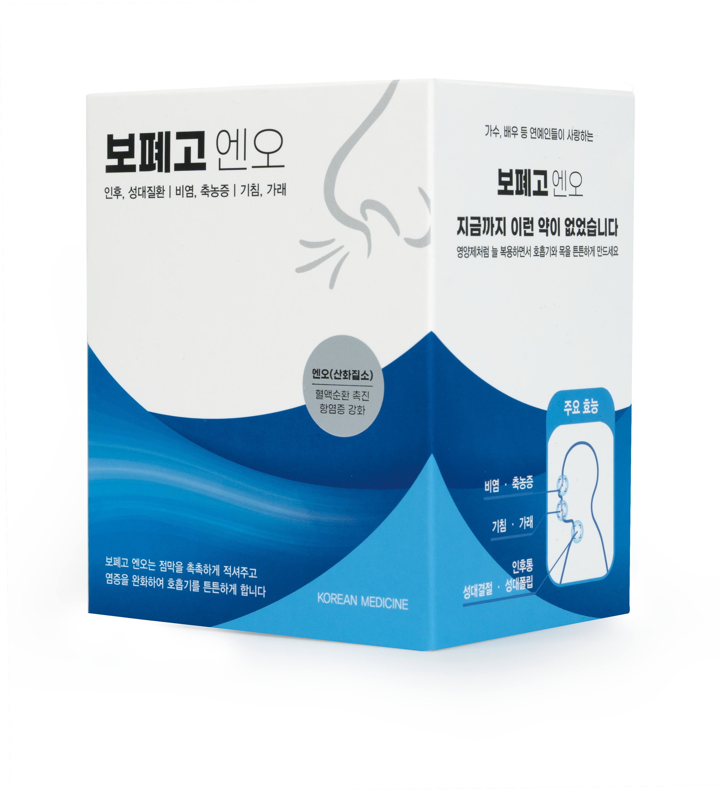

목을 자주 쓰는 직업
강의·상담·노래 등 발성량이 많아 목이 쉽게 건조하거나 불편한 경우
인후·성대질환 | 비염·축농증 | 만성 기침·가래 관리에 도움을 줍니다.
호흡기 점막을 촉촉하게 적시고 염증 완화를 보조하여 답답한 호흡기를 편안하게 지켜드립니다.
※ 증상에 따른 진료 및 처방 적합성 확인이 필요하며, 효과는 개인별로 다를 수 있습니다.

보폐고 엔오(NO) · 스틱형 한약 안내호흡기와 목 관련 불편 증상을 상담할 때 우성한의원에서 안내하는 한약 처방입니다.
보폐고 엔오는 스틱형으로 안내되는 한약입니다. 목의 건조감이나 잔기침 등으로 불편한 경우, 증상 발생 시기와 원인 가능성, 기존 치료 및 복용 약물을 함께 살펴 처방 적합성을 판단합니다. 특정 질환의 치료 효과가 모든 사람에게 동일하게 나타나는 것은 아닙니다.
강의·상담·노래 등 발성량이 많아 목이 쉽게 건조하거나 불편한 경우
잔기침이나 가래가 이어져 원인 확인과 증상 상담이 필요한 경우
비염·부비동 관련 증상이 의심되거나 목 뒤로 분비물이 넘어가는 느낌이 있는 경우
건조한 공기나 환경 변화로 목과 호흡기에 불편함을 느끼는 경우
진료가 우선인 증상: 호흡곤란, 객혈, 흉통, 심한 고열 또는 빠르게 악화되는 증상은 지체하지 말고 의료기관에서 평가받으세요. 오래 지속되는 기침도 원인 확인이 필요합니다.
길경·대청엽·금은화·연교·맥문동·오미자 등을 배합한 한약입니다. 산화질소(NO)도 함유되어 있습니다. 원료별 함량과 전체 배합 정보는 제품 자료 및 처방 내용을 통해 확인할 수 있습니다.
짜 먹는 스틱형으로 휴대와 복용이 간편합니다. 15일분은 45포, 30일분은 90포로 안내하며, 복용 횟수와 방법은 처방 시 의료진이 안내합니다.
알레르기, 임신·수유 여부, 만성질환, 복용 중인 의약품 및 한약을 의료진에게 알려주세요. 복용 후 이상 증상이 생기면 상담이 필요합니다.
보폐고 엔오에는 산화질소(NO)가 실제 함유되어 있습니다. 다만 함유 사실만으로 특정 질환의 치료 효과나 인체 내 산화질소 증가 효과가 입증되는 것은 아니며, 성분 함량과 효능에 관한 세부 사항은 관련 자료를 확인해 안내합니다.
증상 확인부터 복용 중 경과 상담까지 단계별로 안내합니다.
증상 지속 기간, 발열 여부, 기존 질환, 복용 중인 약 등을 확인합니다.
진찰 결과에 따라 필요한 평가와 치료 방향, 한약 처방 여부를 결정합니다.
처방 시 개인별 복용량과 기간, 이상 반응 시 대처 방법을 설명합니다.
길경·대청엽·금은화·연교·맥문동·오미자 등 한약재를 배합하고 산화질소(NO)를 함유한 스틱형 한약입니다. 목과 호흡기 증상을 진찰한 후 처방 적합성을 판단합니다.
짜 먹는 스틱형 한약입니다. 15일분 45포, 30일분 90포로 안내하며, 실제 복용 횟수와 방법은 진료 후 처방 지침에 따릅니다.
15일분(45포)은 170,000원, 30일분(90포)은 300,000원입니다. 실제 비용과 구성은 방문 또는 상담 시 확인해 주세요.
비대면 진료 가능 여부는 관련 제도와 환자 조건 및 의료진의 판단에 따라 달라집니다. 전화로 먼저 확인해 주세요.
기침이 오래 지속되거나 호흡곤란, 객혈, 흉통, 고열 등이 동반되면 원인 평가를 위해 신속하게 의료기관 진료를 받으세요.
진료시간은 변경될 수 있으므로 방문 전에 전화로 확인해 주세요.
현재 증상과 건강 상태를 확인한 뒤 적합한 진료 방향을 안내해 드립니다.